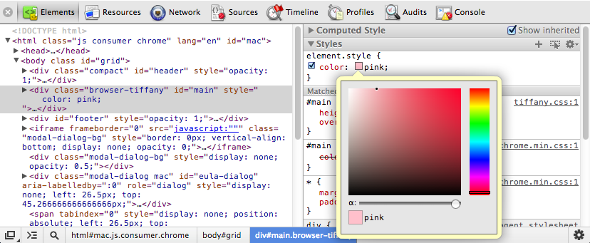
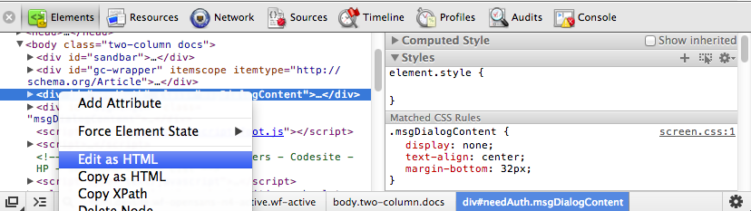
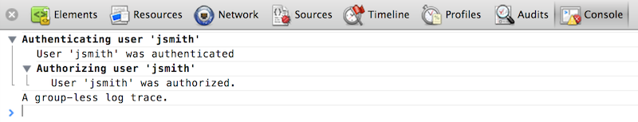
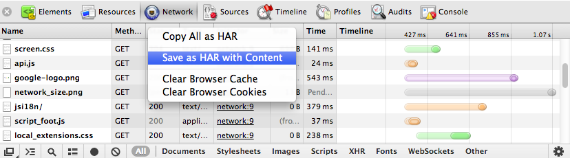
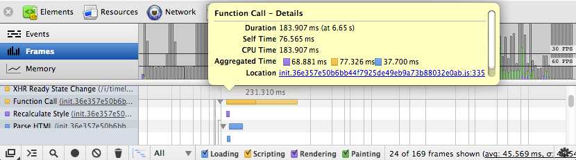
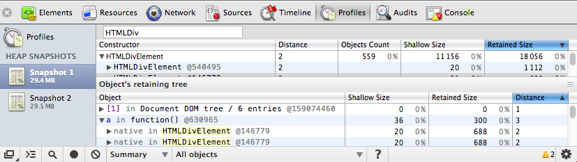
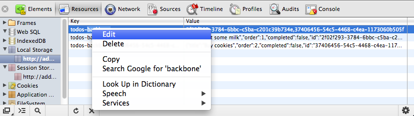

The Chrome Developer Tools (DevTools for short), are a set web authoring and debugging tools built into Google Chrome. The DevTools provide web developers deep access into the internals of the browser and their web application. This overview of the DevTools points out the most popular and useful features. If you haven't used the DevTools before, start here. Even if you're an experienced web developer, you might pick up some tips.
Note: If you are a web developer and want to get the latest version of DevTools, you should use Google Chrome Canary.
To access the DevTools, open a web page or web app in Google Chrome. Then take one of the following actions:
There are several useful shortcuts for opening the DevTools:
For your day-to-day workflow, learning the shortcuts will save you time.
The DevTools are organised into task-oriented groups in the toolbar at the top of the window. Each toolbar item and corresponding panel let you work with a specific type of page or app information, including DOM elements, resources, and sources.

Overall, there are eight main groups of tools available view Developer Tools: Elements, Resources, Network, Sources, Timeline, Profiles, Storage, Audits, and Console. You can use the Ctrl+[ and Ctrl+] shortcuts to move between panels.
The Elements panel lets you see everything in one DOM tree, and allows inspection and on-the-fly editing of DOM elements. You will often visit the Elements tabs when you need to identify the HTML snippet for some aspect of the page. For example, you may be curious if an image has an HTML id attribute, and what that attribute's value is.

Read more about inspecting the DOM and styles
The JavaScript Console provides two primary functions for developers testing web pages and applications:

Read more about working with the console
As the complexity of JavaScript applications increase, developers need powerful debugging tools to help quickly discover the cause of an issue and fix it efficiently. The Chrome DevTools include a number of useful tools to help make debugging JavaScript less painful.
Read more about how to debug JavaScript with the DevTools
The Network panel provides insights into resources that are requested and downloaded over the network in real time. Identifying and addressing those requests taking longer than expected is an essential step in optimizing your page.

Read more about how to improve your network performance
The Audit panel can analyze a page as it loads and provide suggestions and optimizations for decreasing page load time and increase perceived (and real) responsiveness. For further insight, we recommend also installing the PageSpeed extension.
The Timeline panel gives you a complete overview of where time is spent when loading and using your web app or page. All events, from loading resources to parsing JavaScript, calculating styles, and repainting are plotted on a timeline.

Read more about how to improve rendering performance
The Profiles panel lets you profile the execution time and memory usage of a web app or page. The Profiles panel includes a few profilers: a CPU profiler, a JavaScript profiler and a Heap profiler. These help you to understand where resources are being spent, and so help you to optimize your code:

Read more about using how to improve JavaScript and CSS performance
The Resources panel lets you inspect resources that are loaded in the inspected page. It lets you interact with HTML 5 Database, Local Storage, Cookies, AppCache, etc.

Read more about inspecting storage resources
There are several other areas of the DevTools documentation that you might find of benefit to review. These include:
Get moreTo more tips on the DevTools watch our regular show The Breakpoint on YouTube. You can also follow us on @ChromiumDev or ask a question using the forums. or checkout the Google Chrome Developers G+ page. |
Take the courseExplore and master the DevTools with our free "Discover DevTools" coursen on Code School.
Get involvedTo submit a bug or a feature request on DevTools, please use issue tracker at http://crbug.com. Please also mention "DevTools" in the bug summary. Anyone can also help make the DevTools better be directly contributing back to the source. Debugging extensionsLooking to use the DevTools to debug Chrome extensions? Watch Developing and Debugging extensions or read the Debugging tutorial. |